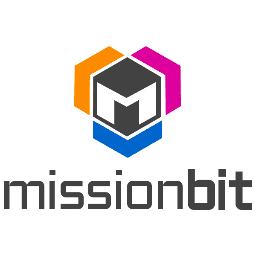

Education
University of California, Irvine
Computer Science, B.S.
2021 - Present
GPA: 4.0
Expected Graduation: June 2025
- Relevant Coursework
Programming with Software Libraries (Python); Intermediate Programming (Python); Programming in C/C++ as a Second Language; Data Structure Implementation and Analysis; Discrete Mathematics; Boolean Logic and Discrete Structures; Probability and Statistics for CS; Linear Algebra; Human Computer Interaction - Achievements
- Dean’s Honor List (Fall 2021, Winter 2022, Spring 2022)
- Tarkovsky Prize (placed first in essay contest hosted by San Francisco Art & Film)
- Technical Skills
Python, C++, HTML and CSS, Git - Languages
- Native proficiency in English
- Proficienct in Mandarin
- Proficienct in Cantonese
Lowell High School
San Francisco, CA
2017 - 2021
GPA: 4.0
- AP Courses
Computer Science A; Calculus BC; Statistics; Chemistry; Physics C: Mechanics; Physics C: Electricity & Magnetism - Activities
- Lacrosse Team
- Quiz Bowl Team
- Teens for Tutor Club
Relevant Experience
Scientific Computing Intern
California Academy of Sciences
San Francisco, CA
July 2022 - Present
The California Academy of Sciences is a research institute and natural history museum that is among the largest museums of natural history in the world, housing over 46 million specimens.
- Worked on a citations finder program to measure the scientific impact of the museum's specimens
- Resolved technical design issues and bugs in Python
- Developed mockups and assisted in defining specifications for a collections explorer web project aiming to educate the public on the scientific importance of collecting specimens
Quality Assurance Intern
Dataships
Dublin, Ireland
June 2022 - August 2022
Dataships is a SaaS company specializing in automating compliance with data privacy laws and building first party data relationships.
- User tested software product and recommended improvements to ensure good user experience
- Conducted a competitor's analysis of 30 companies to assist founder in preparing for board meeting
- Performed quality assurance checks for 140 customers
- Designed over 20 images and graphics for the company blog using Canva
- Compiled a list of marketing contacts for over 1000 companies
- Navigated 8-hour time zone difference and clearly communicated with supervisors and colleagues
Volunteering
Events Chair
Mission Bit Leadership Council
San Francisco, CA
February 2022 - Present
Mission Bit is a non-profit organization dedicated to empowering under resourced high school youth across the San Francisco Bay Area by making computer science more accessible through free coding classes.
- Coordinated with council members to plan events focused on building community, developing professional skills, and promoting inclusivity and diversity in tech
- Designed flyers and promoted events on social platforms to alumni network
Academic Tutor
Read Write Discover
San Francisco, CA
June 2019 - August 2019
Read Write Discover is a nonprofit organization that partners with libraries to host summer tutoring opportunities for K-8th grade students in the San Francisco Bay Area.
- Provided free summer reading and writing lessons to youth in my community
- Researched appropriate curriculums and organized individualized lessons
- Composed student evaluations for parents
- Demonstrated patience and adaptibility in evolving situations